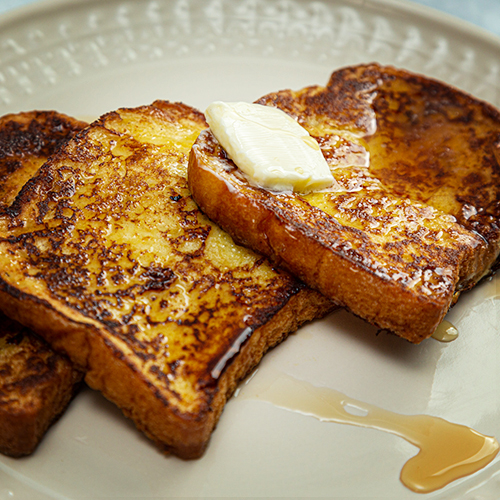

Home
French Toast

Breakfast, brunch, or dinner; french toast is as versitile as it is easy to make and delicious to eat
Ingriedents
- 6-8 slices of a thick cut, preferably starting to go stale bread
- 1/4 cup of all-purpose flour
- 1 cup of milk
- 3 eggs
- 1 tablespoon of sugar
- 2 to 3 tablespoons of butter, for the cooking surface
- vanilla extract, nutmeg, and ground cinammon to taste
A note on the last ingredients, I find a lot of recipes really undersell how much vanilla extract or seasonings to add regardless of the food.
To that end, I find its easier to "eyeball" these ingredients yourself and refine the amount added over time.
Steps
- In a large bowl, measure and add the flour
- While whisking, add the milk, eggs, and sugar. Keep whisking until the mixture is smooth and all the eggs yolks have been integrated in
- Add vanilla extract, nutmeg, and cinammon to the mixture. Whisk until the mixture is uniform
- Put a pan or gridle over medium heat and melt the butter. Spread the melted butter over the cooking surface
- While the pan is heating up, put the first piece(s) of bread into the mixture and coat both sides with batter
- Transfer the piece(s) of bread to the pan and cook each side for 2-4 minutes depending on preference
- While the first slices are cooking, transfer the next slice(s) to the batter
- Repeat steps 5-7 until you run out of batter or bread, whichever comes first
- After the last slices are done,its time to serve. You can add your own fruit, chocolate chips, or stick with classic butter and syrup